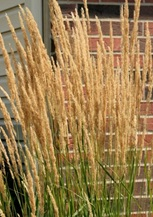

As seen on Georgia Gardens, ornamental grasses can add new drama, texture, and color to your garden. Best of all, they tend to be very hardy and low-maintenance plants.
In the South, most ornamental grasses grow quickly in the spring and summer, bloom late in the summer and fall, and are dormant throughout the winter. They are very versatile—they can be annuals or perennials, and they can be ground covers or can reach up to 20 feet tall. Some have flowers and are brightly colored, and all have interesting textures and sway gracefully in the wind.
Ornamental grasses can be used as accent plants, but they can also be used to solve problems in your landscape. Try planting them to create a hedge, a border, or a groundcover.
Some dramatic ornamental grasses that do well in the South: Pampas Grass, which can reach up to 20 feet in height and has large silvery white flower plumes on long stems; Red Baron Japanese Blood Grass, which is about 12 to 18 inches tall and has bright red foliage in summer and fall; and Variegated Purple Moor Grass, which has purplish leaves with cream stripes.
Few things taste more delicious than a freshly picked tomato from the garden in summer. With a little extra knowledge, you can help ensure a healthy tomato harvest this year.
After the last frost in your area, the soil should be warm enough to plant tomatoes. Choose a spot where the plants will receive at least six hours of sunlight each day. Due to the clay soil found in most of the South, it is recommended that you augment the soil with some peat moss or humus. You have the right mix if it crumbles when you squeeze a handful.
Be sure to dig a deep hole for the tomato plant. It should sit deeper in the ground than it does in the pot. This helps the roots grow stronger and produces a stronger plant. Add a little fertilizer to the soil before planting. Tomato plants can get very large and need extra support, so it is best to use stakes or a cage to hold them up so they won't fall over.
Water the plants well when you plant them, and then check them regularly to see if they need more water (wilted leaves are a sign that they need water). When you water, focus on the soil around the plant rather than watering the plant itself. Consider adding fertilizer after another six to eight weeks.
By following these tips, you should be able to enjoy a fruitful tomato season.Roof gardens have existed since ancient times. Beyond just being aesthetically pleasing, roof gardens have practical benefits, too. Some environmental benefits of roof gardens include the following:
The following are some of the important criteria to consider before designing a roof garden:
Roof gardens are becoming more popular as urban development depletes the few remaining green areas of many cities. Countless cities throughout the U.S. and around the world, in a variety of climates, are exploring the benefits of rooftop gardens. In both office and residential buildings, prospective tenants seem to consider roof gardens a worthwhile feature. One of the most elaborate examples of a roof garden is The Kensington Roof Gardens in London, England. It actually consists of three gardens: the Spanish Garden, the Woodland Garden, and the Tudor Garden. The gardens take up over one and a half acres and have a view of London’s skyline. Events, such as weddings, are held at the gardens frequently. A restaurant is also on the roof, plus a members’ club that is open on Friday and Saturday nights.